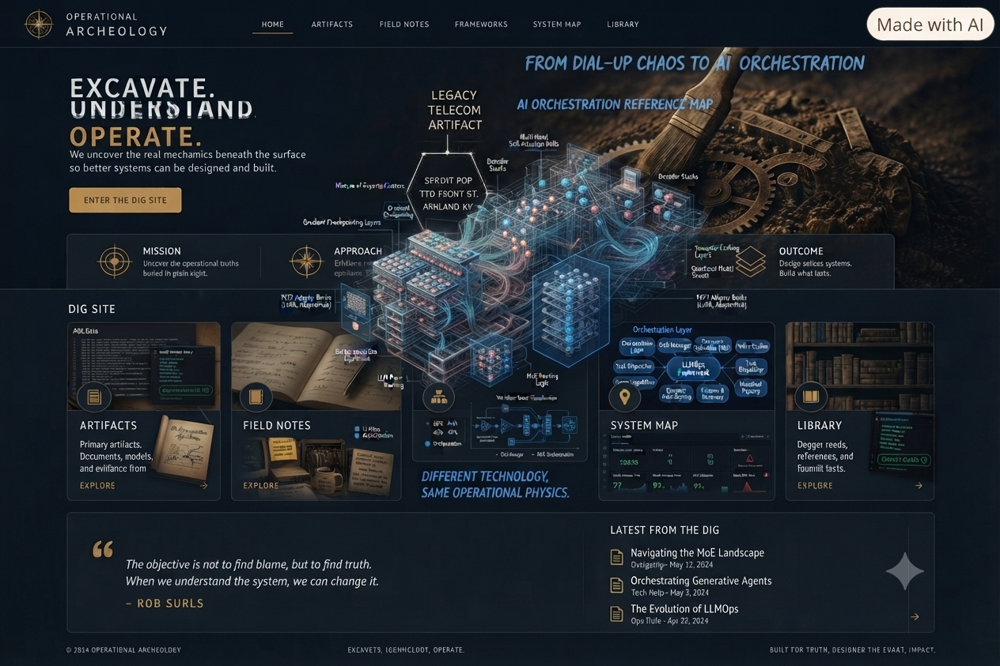
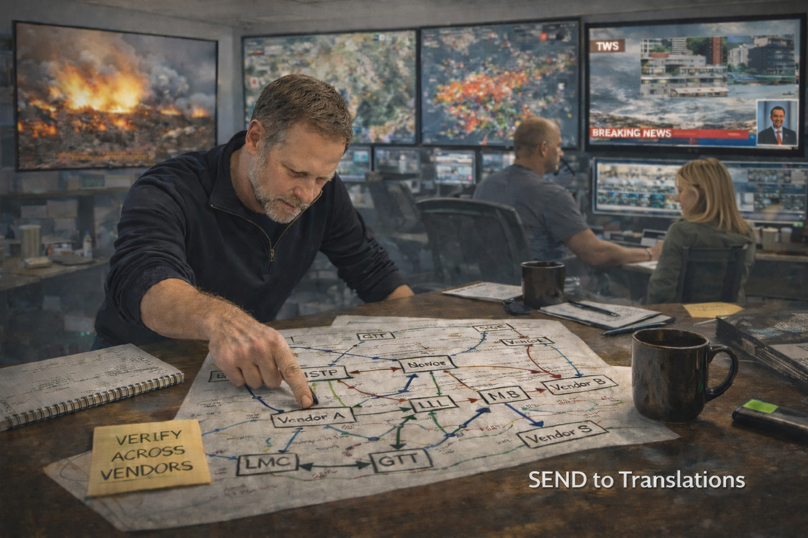

01 · Evidence
Go where reality lives.
Configuration files. Translation tables. Routing decisions. Error logs. Traffic. The evidence is usually there long after the explanation has changed.

The trail runs from carrier routing tables and translation logic to the orchestration problems showing up in AI today.
Operational Archeology
Before there were AI agents, there were live networks, ugly failure modes, vendor boundaries and engineers trying to figure out what actually happened.
Operational Archeology is the practice of digging through that evidence. Not the clean diagram. Not the marketing slide. The thing that happened on the wire.
The First Law
“Systems don't fail according to clean diagrams. They fail at the seams where the pieces meet.”
— operational physics
01 · Evidence
Configuration files. Translation tables. Routing decisions. Error logs. Traffic. The evidence is usually there long after the explanation has changed.
02 · Pattern
A missing point code can break a call across a carrier network. A missing contract can break an AI workflow. Different vocabulary. Same boundary problem.
03 · Operation
Better systems come from understanding failure, state, transport, ownership and the ugly little details that never make it into the architecture diagram.
The excavation grid
Start with the artifacts. Follow the field notes. Then look at the frameworks that connect the old problems to the new ones.
Primary excavated records. Sprint LTD / AOL routing sheets, modem counts, Most Idle hunting and the mechanics underneath the traffic.
Firsthand dispatches from the part of operations where every dashboard can be green and the system can still be broken.
The operating models that keep complex systems understandable when multiple actors, boundaries and failure modes collide.
The map between carrier routing, signaling boundaries and today's multi-agent execution buses. This is the workbench, not a dashboard.
Standards, old carrier logic, technical residue and the material that shaped how large systems actually behave.
Framework 001 / Mode
This first version is deliberately transparent. No model call. No hidden intelligence. Just the five jurisdictional lanes doing exactly what they are supposed to do so the framework itself can be inspected.
Input Terminal
OA-SBX-V1 / Deterministic
OA-SBX-V1 / CONTRACT LOADING
Rule
is not the answer. It is where competing explanations survive long enough to be tested without contaminating the operating system.
Choose a scenario, inspect the problem statement, then run it through the five jurisdictional lanes. The point is not instant agreement. The disagreement is part of the evidence.
Case Intake
Synthesis Gate
Agreement is earned here
Majority Synthesis
Dissent
Decision Posture
Execution Receipt
OA CONTRACT / V1.0
Contract
oa.framework.001.v1
Lane Count
5 / 5
Dissent
Required
V1 proves the interaction and the jurisdictional logic. V2 can replace the fixed scenario object with TexttASKAI orchestration while keeping this interface and response structure intact.
Read Framework 001 →Operator's note
The objective isn't to find blame. It's to find what actually happened.
Blame is usually the first story we tell ourselves when a system behaves badly. The useful story starts later, after somebody digs past the surface symptom and follows the state, the routing, the boundary and the evidence.
— Rob Surls
Systems architecture · telecom · AI orchestration
Field dispatches
VERIFIED / IN THE FIELDApplying operational excavation to AI orchestration, behavioral drift and verifiable execution contracts.

When every vendor is green and the system is still failing.
Sprint LTD / AOL dial-up routing, Most Idle hunting and glare avoidance.

The person doing the digging
Telecom veteran · systems architect · founder
I spent decades around carrier-grade systems where a tiny piece of state could travel through half a network before anyone discovered why the call failed. The lesson wasn't that the systems were old. The lesson was that complex systems leave evidence.
Operational Archeology is where I follow that evidence into today's systems. Through TexttASKAI, the same ideas are being applied to AI orchestration: boundaries, transport, identity, state, contracts and the failure modes that appear when no single component sees the whole system.
Field notes, systems archaeology and the occasional reminder that the dashboard isn't the system.
View LinkedIn Profile ↗